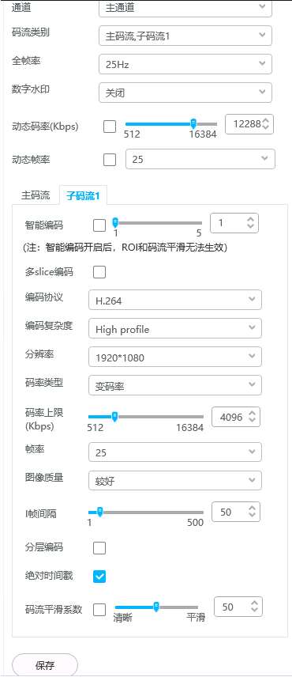

配置视频流参数
操作步骤
- 登录摄像机的Web界面（https://IP地址）。
- 选择“配置 > 音视图 > 视频流参数”。
不同型号，支持的功能存在差异，界面也存在差异，请以实际界面为准。
图1 视频流参数
 - 在页面左侧配置视频流参数，详细说明如表1所示。

- 绝对时间戳必须勾选。
- 当网络带宽不够时，配置可改为：子码流分辨率1080p，变码率4M以上，图像质量选项“最好”。但车牌识别准确率指标会降低，不保证达到标准规格。
以下参数表是全量参数说明，摄像机具体支持的参数请以实际界面为准。
表1 视频流参数说明 参数
如何配置
通道
设备的通道类型。
码流类别
您可以根据实际使用情况选择码流类别。
- 主码流：码流大，清晰度高，占用带宽大，适用于本地存储。
- 子码流：图像较流畅，占用带宽小，适用于低带宽网络传输。
说明：SD卡录像仅支持主码流。
部分C、D系列不能设置为三码流及以上，即只能配置为“主码流”或“主码流,子码流1”，与目标检测、周界智能功能互斥，开启目标或者周界智能时，子码流最大可配置D1的分辨率。
镜像模式
该功能开启后可以对视频画面做上下、左右颠倒处理。
- 关闭：不启用镜像功能。
- 水平镜像：对视频画面做左右颠倒处理。
- 垂直镜像：对视频画面做上下颠倒处理。
- 全部：即中心镜像，对视频画面同时做上下、左右翻转处理。
走廊模式
该功能开启可以对视频进行90度旋转，得到9:16或者3:4等横纵比。
说明：- 开启走廊模式时，建议枪型网络摄像机和筒型网络摄像机翻转90度进行侧向安装，半球网络摄像机需要打开防护罩，旋转镜头90度。
- 当走廊模式、电子防抖、透雾模式中有两种或两种以上开启时，性能开销会比较大，可能会存在视频帧率下降导致画面偶尔卡顿的现象，请结合实际需求，合理配置相关参数。
- 打开走廊模式前，请先确保停车侦测功能未启用。
全帧率
设备通过传感器采集到的帧率，代表摄像机最大能力。
说明：在摄像机Web界面，用户可根据实际需求和带宽情况设置需要的帧率。设置帧率越高，画面更清晰、更逼真。 帧率最大值不能超过全帧率。
数字水印
启用数字水印功能，保护信息安全、实现防伪溯源、版权保护。
- 关闭：不启用数字水印功能。
- 海思数字水印：启用海思数字水印功能，保护信息安全、实现防伪溯源、版权保护。
- SHA256数字水印：启用SHA256数字水印功能，保护信息安全、实现防伪溯源、版权保护。
动态码率
当编码协议为“H.264”和“H.265”时可以设置。
当摄像机触发告警（不包括温度告警）时，摄像机会自动采用动态码率值，使告警发生时实况（主码流）或者录像更加清晰，当告警结束后，重新返回在码流中设置的码率。
说明：- 建议动态码率值大于码流中设置的码率值。
- 动态码率仅对主码流有效。
动态帧率
当编码协议为“H.264”和“H.265”时可以设置。
当摄像机触发告警（不包括温度告警）时，摄像机会自动采用动态帧率值，当告警结束后，重新返回在码流中设置的帧率。
说明：- 建议动态帧率值大于码流中设置的帧率值。
- 动态帧率仅对主码流有效。
智能编码
设置智能编码后，摄像机可自适应场景，降低码率大小，节省存储空间。
级别越高，降低码率效果越显著，但可能造成图像质量下降。
说明：开启智能编码后，“编码复杂度”、“码率类型”、“图像质量”、“I帧间隔”和“分层编码”这几个参数不可设置。
多slice编码
当“编码协议”为“H.264”时可以设置。
多slice编码，是指将视频流分成多段，每段组成一个slice，每个slice的编码过程是相互独立的，因此摄像机可以并行的对多个slice进行编码和解码 ，从而提升编码和解码性能，默认勾选。
编码协议
根据实际情况选择视频编码协议。
- H.264：在同样的图像质量前提下，占用带宽小。
- MJPEG：每一帧都可以独立解码显示，不需要参考前后帧，压缩比小，相同视频质量下所需的带宽大，适合于影像编辑。
- H.265：在同样的图像质量前提下，占用带宽较H.264更小。
说明：- 在摄像机与上级安防平台对接前，请务必保证摄像机的编码协议与上级安防平台一致，以免造成上级安防平台无法浏览实况，录像等问题。如果上级安防平台不支持当前摄像机的编码协议，请将摄像机的编码协议修改为上级安防平台所支持的编码协议。
- 本地录像与SD卡录像支持H.264和H.265协议。
编码复杂度
当“编码协议”为“H.264”和“H.265”时可以设置。
H.264包含H.264 Base Profile、H.264 Main Profile和H.264 High Profile，这三种编码复杂度在编码压缩性能上依次升高，对硬件设备解码性能的要求也依次升高。
H.265的编码复杂度为H.265 Main，当编码协议从MJPEG和H.265切换回H.264时，默认采用H.264 High Profile。
分辨率
分辨率越高，图像越清晰，带宽要求越高。当4K摄像机码流分辨率置灰无法设置时，请检查“区域裁剪”是否开启。如果开启，可关闭后再重新选择分辨率。
码率类型
当“编码协议”为“H.264”和“H.265”时，码率类型可以配置。
码率是数据传输时单位时间传送的数据位数。
- 变码率：码率可以随着图像的复杂程度的不同而变化，保证大动态画面的清晰度，当画面简单或者静止时，码率会降低。推荐使用变码率。
- 定码率：平均码率保持不变，瞬时码率的浮动上限为设定值的110%，但大动态画面如果码率不合适会出现画面不清。
码率值
当“码率类型”为“定码率”时可以调整的码率范围。
码率值越大，视频质量越好，占用带宽越大。
- 为保证视频质量，请根据实际情况选择合适的码率值。
- 为了保证视频流畅，实际带宽需求会高于码率值，在码率较低时，所需带宽一般为码率的1.2倍。
- 当开启的实况总体码率超过40M时，建议降低码率或减少开启的视频流数量，以免码流过大超出设备性能带来实况卡顿、花屏等现象。
码控模式
当“码率类型”为“定码率”时可以选择。
- 帧率优先：优先保证帧率的稳定，但在场景复杂或图像中物体快速移动等情况下，会使实际码率值大于设置的码率值。
- 图像质量优先：优先保证图像的质量，但在场景复杂或图像中的物体快速移动等情况下，会出现丢帧或实况不流畅。
码率上限
当“码率类型”为“变码率”时可以调整的码率范围。
码率范围取决于您选择的“分辨率”，分辨率不同，码率范围也不同。
帧率
帧率是指每秒显示的帧数。
帧率越高，得到的画面就越流畅逼真，占用带宽越大。
图像质量
当“编码协议”选择“H.264”和“H.265”并且“码率类型”选择“变码率”时，可以选择。
说明：图像质量越好，占用的带宽越大，请根据实际需求选择合适的图像质量。
I帧间隔
当“编码协议”选择“H.264”和“H.265”时，可以选择。
I帧又称为内部画面，I帧通常是每个画面组的第一个帧，经过适度地压缩，作为随机访问的参考点，可以当成图像。I帧间隔越小，视频质量越好，占用带宽越大。
说明：建议I帧间隔设置为帧率的两倍。
分层编码
当“编码协议”为“H.264”和“H.265”时可以设置。
是否启用分层编码功能，打勾表示已选择。
JPEG质量
当“编码协议”为“MJPEG”时可以调整图像质量。
JPEG质量数值越大，视频质量越好，占用带宽越大。
区域裁剪
可以选中检测视频部分区域进行编码作为子码流。
当选择“码流类别”为“主码流，子码流1”、“主码流，子码流1，子码流2”、“主码流，子码流1，子码流2，子码流3”或“主码流，子码流1，子码流2，子码流3，子码流4”时，可以在子码流页签下设置区域裁剪。
说明：- 当选择“子码流1”时，分辨率支持“1920*1080”、“1280*720”、“720*576”、“720*480”。
- 当选择“子码流2”时，分辨率支持“1280*720”、“720*576”、“720*480”、“352*288”、“352*240”。
- 当选择“子码流2”“子码流3”和“子码流4”时，分辨率支持“720*576”、“720*480”、“352*288”、“352*240”。
- 针对“子码流2”、“子码流3”和“子码流4”，其区域裁剪的区域大小不可设置。
- 选择“启用区域裁剪”，打勾表示启用该功能。
- 拖拽鼠标，调整需要裁剪的区域，并保存。
- 设置成功后，在视频预览页面，选择设置了区域裁剪的子码流，画面只显示裁剪的区域。
- 选择，可以开启EPTZ。
说明：EPTZ即电子云台，和PTZ不同，EPTZ不会通过伸缩镜头或转动云台来放大或调整图像角度，而是通过软件实现实况图像放大或角度调整。
- 部分型号设备如果设置图像电子防抖，则无法启用区域裁剪，请合理配置。
- EPTZ要配合区域裁剪开启才可以使用，并且要求实况画面切换成对应的子码流。仅“子码流1”支持EPTZ。
- 小箭头距离十字角越近，箭头越短，画面移动速度越慢；小箭头距离十字角越远，箭头越长，画面移动速度越快。
- 通过鼠标滚轮滑动可以控制变倍，鼠标向前滚动变倍放大，向后滚动变倍缩小。
绝对时间戳
绝对时间戳是指从1970年1月1日（UTC/GMT的午夜）开始至今所经过的毫秒数，不考虑闰秒。
勾选后启用绝对时间戳功能，默认不勾选。
启用该功能后，视频流的RTP扩展头中将带有绝对时间戳。通过RTSP取流等方式获取包含绝对时间戳的视频流，可用于车辆实时定位、轨迹拟合等场景。
说明：- 绝对时间戳与分层编码、数字水印功能互斥。
- RTSP取流方式可参考其他参考资料与所需软件获取配套的摄像机产品文档进行查询。
码流平滑系数
开启或关闭码流平滑系数。默认为50，请根据实际情况设置，码流平滑系数越大，I帧会越小，对应的图像清晰度会降低。
- 单击“保存”。
参考信息
常见分辨率类型及说明如表2所示。4K、6MP、5MP、4MP、3MP、1080P、720P、D1_NTSC、D1_PAL、 CIF_NTSC和CIF_PAL。
分辨率类型 |
说明 |
|---|---|
4K |
分辨率为3840*2160，约800万像素。 |
2048P |
分辨率为3072*2048，约600万像素。 |
2048P |
分辨率为2560*2048，约500万像素。 |
1920P |
分辨率为2560*1920，约500万像素。 |
1728P |
分辨率为3072*1728，约500万像素。 |
1536P |
分辨率为2048*1536，约300万像素。 |
1296P |
分辨率为2304*1296，约300万像素。 |
1520P |
分辨率为2592*1520，约400万像素。 |
1440P |
分辨率为2560*1440，约400万像素。 |
1080P |
分辨率为1920*1080，约200万像素。 |
720P |
分辨率为1280*720，约90万像素。 |
D1_PAL |
分辨率为720*576，约40万像素。 |
D1_NTSC |
分辨率为720*480，约35万像素。 |
CIF_PAL |
分辨率为352*288，约10万像素。 |
CIF_NTSC |
分辨率为352*240，约8.4万像素。 |